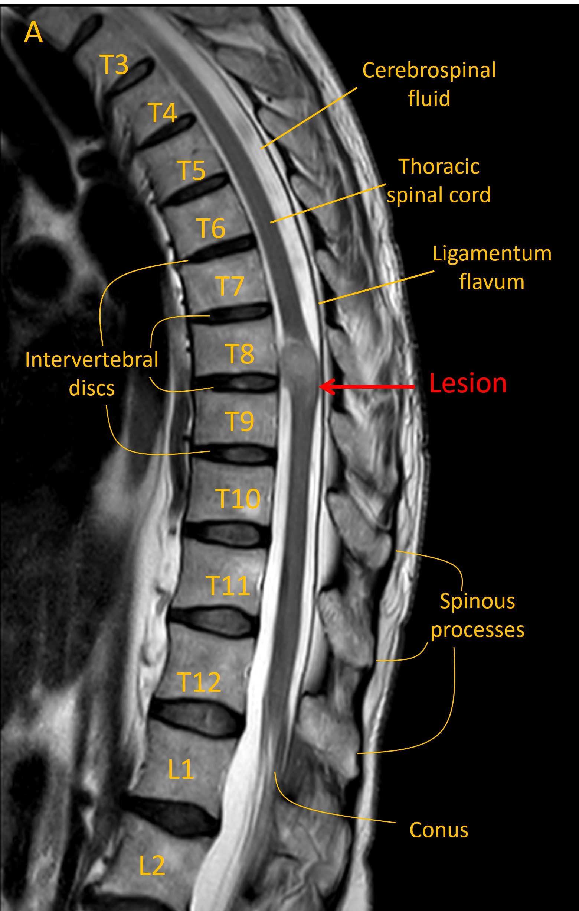
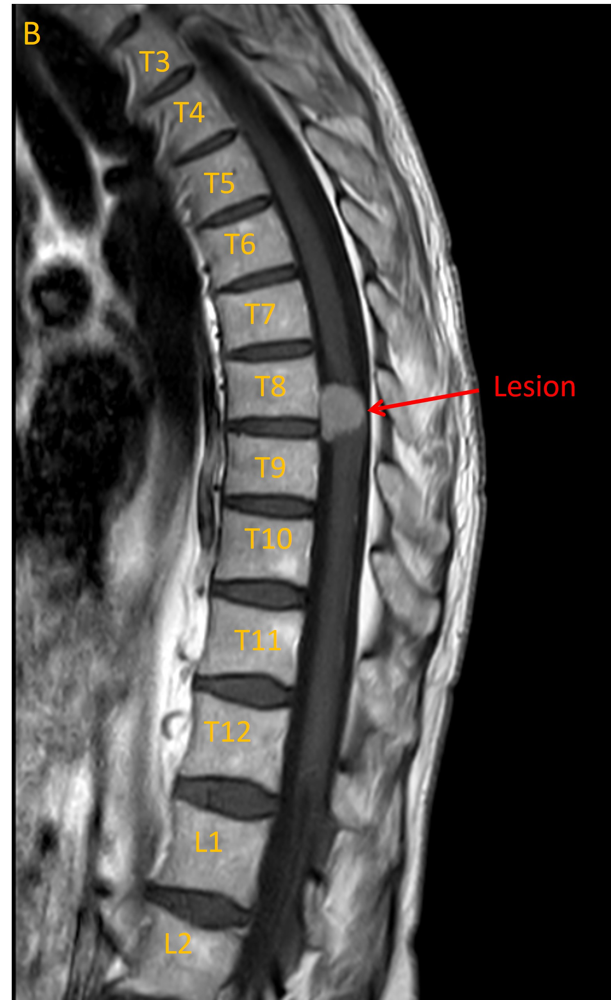
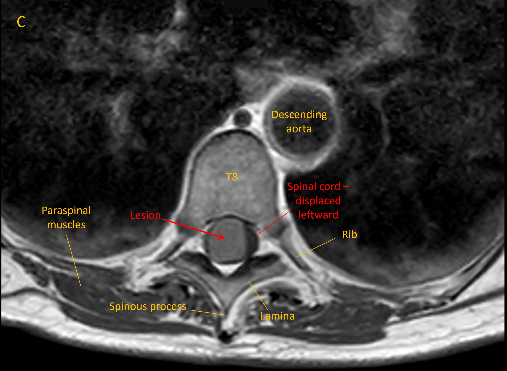

Case 4. Progressive lower limb numbness
Outcome
An MRI identified a lesion at T8/9 growing from the meningeal space (Image A, sagittal T2 MRI). This had homogenous contrast enhancement (B, T1 MRI with contrast). There was evidence of lateral displacement of the spinal cord (C, axial MRI).



Imaging was consistent with a meningioma. Reassuringly there was no evidence of metastatic disease on body imaging.
She subsequently underwent surgical resection of the lesion, with an uncomplicated peri-operative course.
At follow-up she reported improvement in some of the features though some residual sensory changes in the legs. These were manageable however, and not disabling - and importantly, the operation had prevented further progression (for example causing walking difficulty).
Final diagnosisThoracic spinal meningioma causing cord compression and bilateral loss of dorsal column sensory modalities
Key pointsReturn to Cases